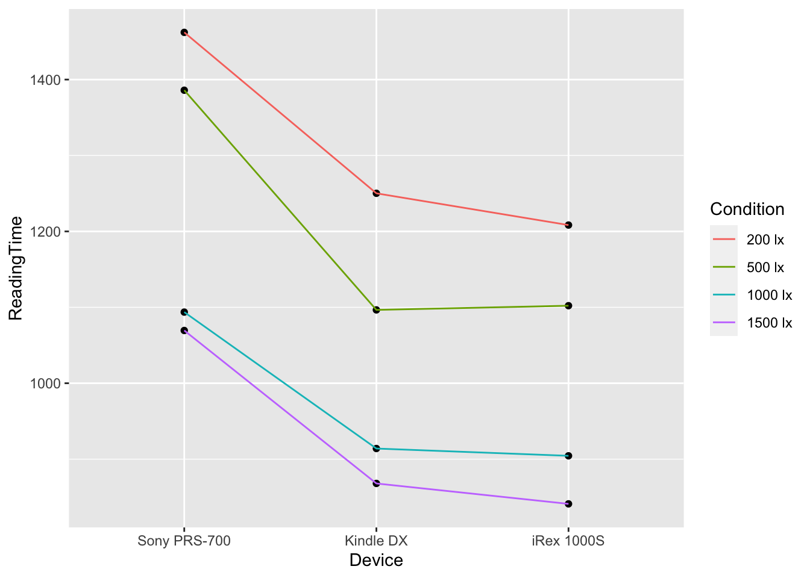

EDUC 640
Two-Way Factorial ANOVA
Chris Ives
Calculate Marginal Means
means <- hw2 %>%
group_by(Device, Condition) %>%
summarise(ReadingTime = mean(ReadingTime))## `summarise()` has grouped output by 'Device'. You can override using the `.groups` argument.Boxplots
ggplot(means, aes(x = Device, y = ReadingTime, group = Condition)) +
geom_point() +
geom_line(aes(color = Condition))
Specify Model
model <- lm(ReadingTime ~ Device + Condition + Device:Condition, hw2)
means_1 <- emmeans(model, ~Device*Condition)pairs(means_1)## contrast estimate SE df t.ratio
## (Sony PRS-700 200 lx) - Kindle DX 200 lx 211.97 174 48 1.215
## (Sony PRS-700 200 lx) - iRex 1000S 200 lx 253.81 174 48 1.455
## (Sony PRS-700 200 lx) - (Sony PRS-700 500 lx) 76.20 174 48 0.437
## (Sony PRS-700 200 lx) - Kindle DX 500 lx 365.56 174 48 2.096
## (Sony PRS-700 200 lx) - iRex 1000S 500 lx 360.01 174 48 2.064
## (Sony PRS-700 200 lx) - (Sony PRS-700 1000 lx) 368.46 174 48 2.113
## (Sony PRS-700 200 lx) - Kindle DX 1000 lx 548.15 174 48 3.143
## (Sony PRS-700 200 lx) - iRex 1000S 1000 lx 557.76 174 48 3.198
## (Sony PRS-700 200 lx) - (Sony PRS-700 1500 lx) 392.67 174 48 2.251
## (Sony PRS-700 200 lx) - Kindle DX 1500 lx 594.15 174 48 3.407
## (Sony PRS-700 200 lx) - iRex 1000S 1500 lx 621.06 174 48 3.561
## Kindle DX 200 lx - iRex 1000S 200 lx 41.84 174 48 0.240
## Kindle DX 200 lx - (Sony PRS-700 500 lx) -135.77 174 48 -0.778
## Kindle DX 200 lx - Kindle DX 500 lx 153.59 174 48 0.881
## Kindle DX 200 lx - iRex 1000S 500 lx 148.04 174 48 0.849
## Kindle DX 200 lx - (Sony PRS-700 1000 lx) 156.49 174 48 0.897
## Kindle DX 200 lx - Kindle DX 1000 lx 336.18 174 48 1.928
## Kindle DX 200 lx - iRex 1000S 1000 lx 345.79 174 48 1.983
## Kindle DX 200 lx - (Sony PRS-700 1500 lx) 180.70 174 48 1.036
## Kindle DX 200 lx - Kindle DX 1500 lx 382.18 174 48 2.191
## Kindle DX 200 lx - iRex 1000S 1500 lx 409.09 174 48 2.346
## iRex 1000S 200 lx - (Sony PRS-700 500 lx) -177.61 174 48 -1.018
## iRex 1000S 200 lx - Kindle DX 500 lx 111.76 174 48 0.641
## iRex 1000S 200 lx - iRex 1000S 500 lx 106.20 174 48 0.609
## iRex 1000S 200 lx - (Sony PRS-700 1000 lx) 114.66 174 48 0.657
## iRex 1000S 200 lx - Kindle DX 1000 lx 294.34 174 48 1.688
## iRex 1000S 200 lx - iRex 1000S 1000 lx 303.95 174 48 1.743
## iRex 1000S 200 lx - (Sony PRS-700 1500 lx) 138.86 174 48 0.796
## iRex 1000S 200 lx - Kindle DX 1500 lx 340.34 174 48 1.951
## iRex 1000S 200 lx - iRex 1000S 1500 lx 367.25 174 48 2.106
## (Sony PRS-700 500 lx) - Kindle DX 500 lx 289.37 174 48 1.659
## (Sony PRS-700 500 lx) - iRex 1000S 500 lx 283.81 174 48 1.627
## (Sony PRS-700 500 lx) - (Sony PRS-700 1000 lx) 292.27 174 48 1.676
## (Sony PRS-700 500 lx) - Kindle DX 1000 lx 471.95 174 48 2.706
## (Sony PRS-700 500 lx) - iRex 1000S 1000 lx 481.56 174 48 2.761
## (Sony PRS-700 500 lx) - (Sony PRS-700 1500 lx) 316.47 174 48 1.815
## (Sony PRS-700 500 lx) - Kindle DX 1500 lx 517.95 174 48 2.970
## (Sony PRS-700 500 lx) - iRex 1000S 1500 lx 544.86 174 48 3.124
## Kindle DX 500 lx - iRex 1000S 500 lx -5.55 174 48 -0.032
## Kindle DX 500 lx - (Sony PRS-700 1000 lx) 2.90 174 48 0.017
## Kindle DX 500 lx - Kindle DX 1000 lx 182.59 174 48 1.047
## Kindle DX 500 lx - iRex 1000S 1000 lx 192.19 174 48 1.102
## Kindle DX 500 lx - (Sony PRS-700 1500 lx) 27.10 174 48 0.155
## Kindle DX 500 lx - Kindle DX 1500 lx 228.58 174 48 1.311
## Kindle DX 500 lx - iRex 1000S 1500 lx 255.49 174 48 1.465
## iRex 1000S 500 lx - (Sony PRS-700 1000 lx) 8.45 174 48 0.048
## iRex 1000S 500 lx - Kindle DX 1000 lx 188.14 174 48 1.079
## iRex 1000S 500 lx - iRex 1000S 1000 lx 197.75 174 48 1.134
## iRex 1000S 500 lx - (Sony PRS-700 1500 lx) 32.66 174 48 0.187
## iRex 1000S 500 lx - Kindle DX 1500 lx 234.14 174 48 1.342
## iRex 1000S 500 lx - iRex 1000S 1500 lx 261.05 174 48 1.497
## (Sony PRS-700 1000 lx) - Kindle DX 1000 lx 179.69 174 48 1.030
## (Sony PRS-700 1000 lx) - iRex 1000S 1000 lx 189.29 174 48 1.085
## (Sony PRS-700 1000 lx) - (Sony PRS-700 1500 lx) 24.20 174 48 0.139
## (Sony PRS-700 1000 lx) - Kindle DX 1500 lx 225.68 174 48 1.294
## (Sony PRS-700 1000 lx) - iRex 1000S 1500 lx 252.59 174 48 1.448
## Kindle DX 1000 lx - iRex 1000S 1000 lx 9.61 174 48 0.055
## Kindle DX 1000 lx - (Sony PRS-700 1500 lx) -155.48 174 48 -0.891
## Kindle DX 1000 lx - Kindle DX 1500 lx 46.00 174 48 0.264
## Kindle DX 1000 lx - iRex 1000S 1500 lx 72.91 174 48 0.418
## iRex 1000S 1000 lx - (Sony PRS-700 1500 lx) -165.09 174 48 -0.947
## iRex 1000S 1000 lx - Kindle DX 1500 lx 36.39 174 48 0.209
## iRex 1000S 1000 lx - iRex 1000S 1500 lx 63.30 174 48 0.363
## (Sony PRS-700 1500 lx) - Kindle DX 1500 lx 201.48 174 48 1.155
## (Sony PRS-700 1500 lx) - iRex 1000S 1500 lx 228.39 174 48 1.310
## Kindle DX 1500 lx - iRex 1000S 1500 lx 26.91 174 48 0.154
## p.value
## 0.9851
## 0.9453
## 1.0000
## 0.6278
## 0.6490
## 0.6166
## 0.1017
## 0.0894
## 0.5229
## 0.0536
## 0.0359
## 1.0000
## 0.9997
## 0.9990
## 0.9993
## 0.9989
## 0.7366
## 0.7022
## 0.9959
## 0.5635
## 0.4606
## 0.9965
## 1.0000
## 1.0000
## 0.9999
## 0.8649
## 0.8392
## 0.9996
## 0.7219
## 0.6213
## 0.8773
## 0.8902
## 0.8702
## 0.2546
## 0.2293
## 0.8021
## 0.1498
## 0.1062
## 1.0000
## 1.0000
## 0.9956
## 0.9932
## 1.0000
## 0.9737
## 0.9429
## 1.0000
## 0.9943
## 0.9914
## 1.0000
## 0.9687
## 0.9343
## 0.9961
## 0.9940
## 1.0000
## 0.9760
## 0.9470
## 1.0000
## 0.9989
## 1.0000
## 1.0000
## 0.9981
## 1.0000
## 1.0000
## 0.9900
## 0.9738
## 1.0000
##
## P value adjustment: tukey method for comparing a family of 12 estimatesSpecifying contrasts
means_1## Device Condition emmean SE df lower.CL upper.CL
## Sony PRS-700 200 lx 1462 123 48 1214 1710
## Kindle DX 200 lx 1250 123 48 1002 1498
## iRex 1000S 200 lx 1208 123 48 960 1456
## Sony PRS-700 500 lx 1386 123 48 1138 1634
## Kindle DX 500 lx 1097 123 48 849 1345
## iRex 1000S 500 lx 1102 123 48 854 1350
## Sony PRS-700 1000 lx 1094 123 48 846 1342
## Kindle DX 1000 lx 914 123 48 666 1162
## iRex 1000S 1000 lx 904 123 48 656 1152
## Sony PRS-700 1500 lx 1069 123 48 822 1317
## Kindle DX 1500 lx 868 123 48 620 1116
## iRex 1000S 1500 lx 841 123 48 593 1089
##
## Confidence level used: 0.95contrasts <- list(
hyp1 = c(1, -.5, -.5, rep(0, 6), -1, .5, .5))rep(0, 6) means repeat “0” six times.
contrast(means_1, contrasts, adjust = "holm")## contrast estimate SE df t.ratio p.value
## hyp1 18 214 48 0.084 0.9334Effect Size
effectsize::t_to_eta2(
t = 0.084,
df_error = 48
)## Eta2 (partial) | 90% CI
## -----------------------------
## 1.47e-04 | [0.00, 0.01]